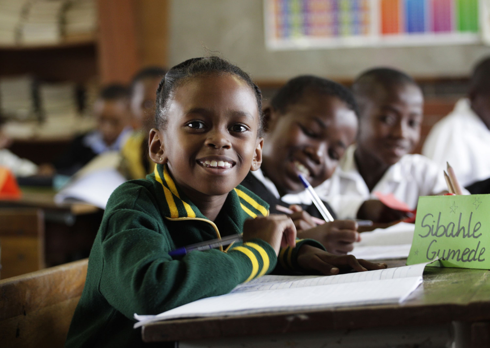

254 740 080 128
Our Blog
Latest news & articles directly from our blog

Empowering Futures: The Urgent Need for Digital Literacy Programs in Karachuonyo, Kendu Bay
In the heart of Karachuonyo, Kendu Bay lies a community grappling with poverty, early pregnancies, school dropouts, and limited economic opportunities for young women. These challenges are not just statistics but are the realities faced by many young ladies who find themselves trapped in cycles of poverty and uninformed choices. To break free from this cycle, digital literacy is one of the most potent tools we can offer them. Digital opportunities can empower young women to make informed life choices, evade early pregnancies, avoid early marriages, and continue their education. This article argues for the urgent need to introduce robust digital literacy programs in the countryside, particularly targeting young women in Karachuonyo.
The Current Landscape
Kendu Bay, nestled in Homa-Bay County, has an economy primarily revolving around fishing—a task culturally reserved for men. Women, in contrast, often find themselves relegated to small subsidiary roles such as fish trading, leaving them economically dependent and marginalized. According to the 2022 Kenya Demographic and Health Survey, young girls in this region face significant challenges: high rates of teenage pregnancies, high school dropout rates, and scarce job opportunities.Digital Literacy as the Key to Unlocking Opportunities
The digital age has opened the floodgates of opportunity. With the right skills, young women in Kendu Bay can break free from traditional limitations and participate in the global economy. Programs like EmpowerTech already demonstrate the transformative power of digital skills training. Focused on imparting skills in areas like Graphic Design, Web Development, Coding, and Social Media Marketing, EmpowerTech equips young women with the ability to thrive in the digital space In a region where economic opportunities are scarce, digital literacy can provide young women with the tools they need to create their own opportunities. From starting online businesses to becoming freelancers in various digital fields, the possibilities are endless. These programs will reduce their reliance on subsistence economies and open doors to financially sustainable careers.Escaping the Cycle of Early Pregnancies and School Dropouts
One of the most profound impacts of digital literacy is its potential to disrupt the cycle of early pregnancies and school dropouts. Without access to information and viable economic alternatives, young girls often fall victim to early marriages and unwanted pregnancies. This is not just an issue of personal choice but one of limited options. Digital literacy can change that. By equipping girls with knowledge and skills, we give them the power to make informed decisions about their futures. They can continue their education through online platforms, pursue remote job opportunities, and avoid the pitfalls that come with uninformed life choices. In fact, young women who have digital skills are more likely to seek out education and employment opportunities rather than settle into early marriages or motherhood.Reducing the Digital Divide in Rural Areas
In many rural areas like Karachuonyo, there is a growing digital divide that leaves young women at a disadvantage compared to their urban counterparts. Lack of access to digital tools and skills isolates them from the opportunities available in the digital economy. Implementing digital literacy programs in these areas is critical to closing this gap and ensuring that all young women have an equal shot at success. Programs like EmpowerTech aim to bridge this divide by offering comprehensive digital skills training to women and girls. The focus is not just on basic computer usage, but also on more advanced skills like coding, graphic design, and social media marketing. These skills are not only relevant in the global market but can also be applied locally, enabling these women to create businesses, market their products online, and connect with clients and customers from around the world.A Path to a Brighter Future
The proverb "Migogo ema loso dala" ("A lady is the one who builds their home") aptly captures the critical role that women play in the community. By empowering young women with digital literacy, we are empowering entire communities. These programs provide them with a pathway to financial independence, better decision-making, and a brighter future. Digital literacy programs are more than just a way to gain skills; they are a tool for transformation. For the young ladies in Karachuonyo, digital literacy can mean the difference between a life of poverty and one of opportunity. It can mean the difference between being trapped in a cycle of early pregnancies and school dropouts and building a future where they control their destinies. The need for digital literacy programs in Karachuonyo, Kendu Bay, is urgent and justifiable. These programs will provide young women with the tools they need to navigate the modern world, escape poverty, and make informed life choices. It is not just about teaching them to use computers; it is about giving them the skills and confidence to build better lives for themselves and their communities. EmpowerTech is a step in the right direction, but we must continue to invest in these initiatives to ensure that no girl is left behind.

Stitching a Better Future: The Need for Fashion and Design Programs for Young Mothers and Widows in Mathare Slums
Mathare, one of the largest and most underserved slums in Nairobi, Kenya, is home to a community of resilient women and young mothers who face tremendous challenges daily. From the devastating impacts of recent floods to government-led demolitions that have left many homeless, the women of Mathare are struggling to provide for their families amidst poverty, loss of income, and rising school dropout rates. In a place where survival is a daily battle, there is a growing need for sustainable economic opportunities—especially for young mothers and widows who shoulder the responsibility of raising their children. A promising solution to these hardships is the introduction of a comprehensive fashion and design program aimed at equipping these women with essential skills to create and sustain their livelihoods. This blog explores the critical need for such a program, drawing on the example of Stitch Your Dreams—a transformative fashion and design empowerment initiative.